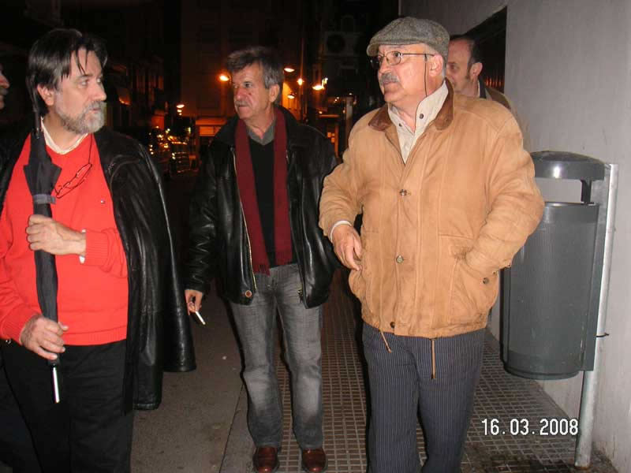

Encuentro en SantoñaAnterior | Inicio | Siguiente |
|
 En nuestro caminar algo vimos que no nos gustó mucho.... No se, no recuérdolo, quizás Jaime, más ducho en eso de anotar pequeños detalles, recuerde algo... Pero Manolo ya estaba preparado con el paraguas, por si acaso... |